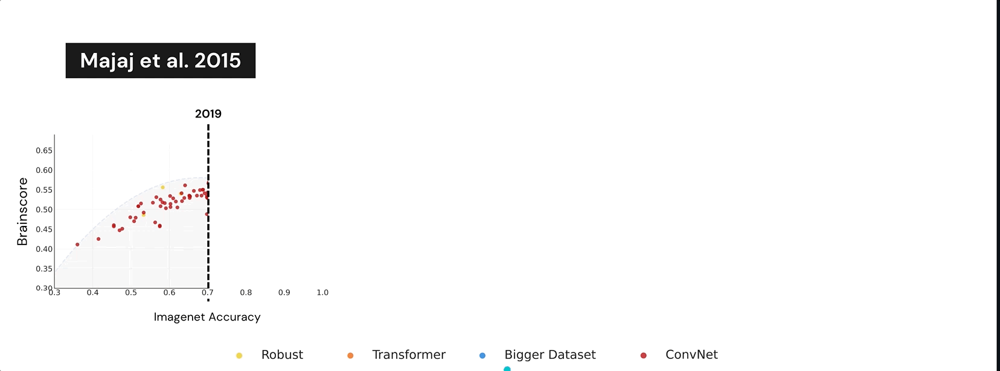
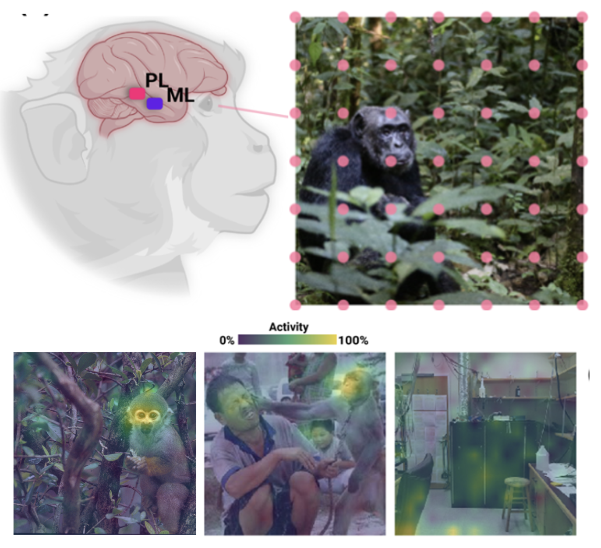

Performance-optimized deep neural networks are evolving into worse models of inferotemporal visual cortex
1Carney Institute for Brain Science, Brown University, Providence, RI 02912
2 Department of Psychology, University of Pennsylvania, Philadelphia, PA 19104
3Department of Neurobiology, Harvard Medical School, Boston, MA 02115
{ivan_felipe_rodriguez,drew_linsley,thomas_fel,thomas_serre}@brown.edu
Read the official paper »
Explore results
·
Github
·
Harmonize your model
·
Recordings paper
·
Click-me paper

Summary of the Project
One of the most impactful findings in computational neuroscience over the past decade is that the object recognition accuracy of deep neural networks (DNNs) correlates with their ability to predict neural responses to natural images in the inferotemporal (IT) cortex (Yamins et al. 2014). This discovery supported the long-held theory that object recognition is a core objective of the visual cortex, and suggested that more accurate DNNs would serve as better models of IT neuron responses to images (Shrimp et al. 2020; Dicarlo et al. 2007). Since then, deep learning has undergone a revolution of scale: billion parameter-scale DNNs trained on billions of images are rivaling or outperforming humans at visual tasks including object recognition. Have today's DNNs become more accurate at predicting IT neuron responses to images as they have grown more accurate at object recognition?

Surprisingly, across three independent experiments, we find that this is not the case. DNNs have become progressively worse models of IT as their accuracy has increased on ImageNet. To understand why DNNs experience this trade-off and evaluate if they are still an appropriate paradigm for modeling the visual system, we turn to recordings of IT that capture spatially resolved maps of neuronal activity elicited by natural images (Arcaro,2020). These neuronal activity maps reveal that DNNs trained on ImageNet learn to rely on different visual features than those encoded by IT and that this problem worsens as their accuracy increases. We successfully resolved this issue with the \emph{neural harmonizer}, a plug-and-play training routine for DNNs that aligns their learned representations with humans (Fel et al. 2020). Our results suggest that harmonized DNNs break the trade-off between ImageNet accuracy and neural prediction accuracy that assails current DNNs and offer a path to more accurate models of biological vision. Our work indicates that the standard approach for modeling IT with task-optimized DNNs needs revision, and other biological constraints, including human psychophysics data, are needed to accurately reverse-engineer the visual cortex. 
Data Release
We are realising the stimuli and the neural recordings that were used for this project. To obtain the files, the easiest way is to run the following code:
from neural_harmonizer.data import Neural_dataset
clickme_ds = Neural_dataset()
This would automatically download the data and organize it for your use!
🗞️ Citation
If you use or build on our work as part of your workflow in a scientific publication, please consider citing the official paper:
Moreover, this paper relies heavily on previous work from the Lab, notably Learning What and Where to Attend where the ambitious ClickMe dataset was collected. As well, as the Harmonizer paper where we introduced Harmonization :
@article{fel2022aligning,
title={Harmonizing the object recognition strategies of deep neural networks with humans},
author={Fel, Thomas and Rodriguez, Ivan F and Linsley, Drew and Serre, Thomas},
journal={Advances in Neural Information Processing Systems (NeurIPS)},
year={2022}
}
@article{linsley2018learning,
title={Learning what and where to attend},
author={Linsley, Drew and Shiebler, Dan and Eberhardt, Sven and Serre, Thomas},
journal={International Conference on Learning Representations (ICLR)},
year={2019}
}
As well, the neural recordings method, crucial for the development of this work:
@article{Arcaro2020-ag,
title = "The neurons that mistook a hat for a face",
author = "Arcaro, Michael J and Ponce, Carlos and Livingstone, Margaret",
journal = "Elife",
year = 2020,
language = "en"
}